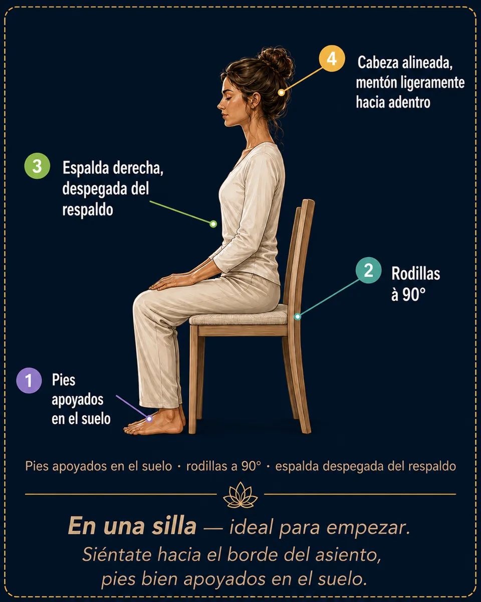
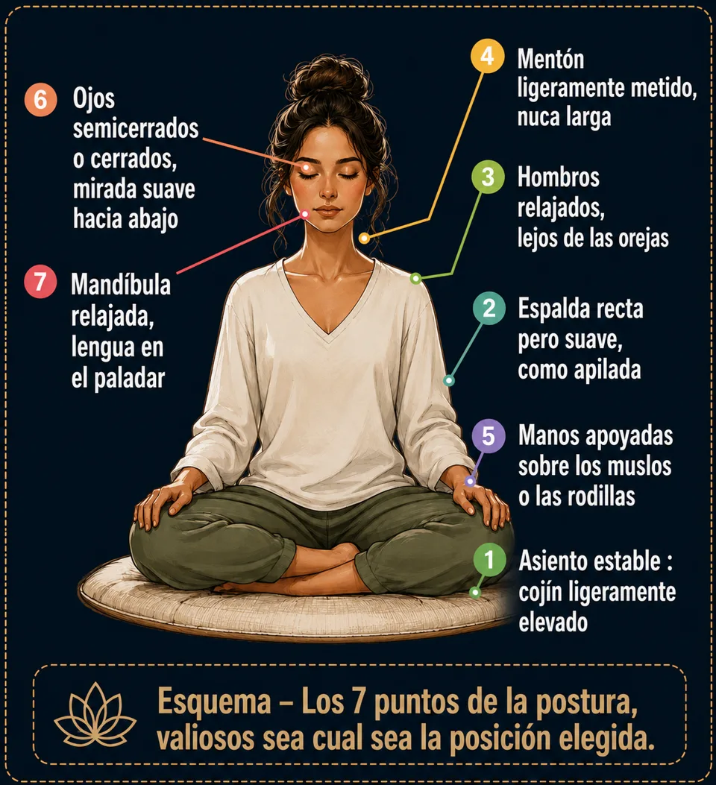
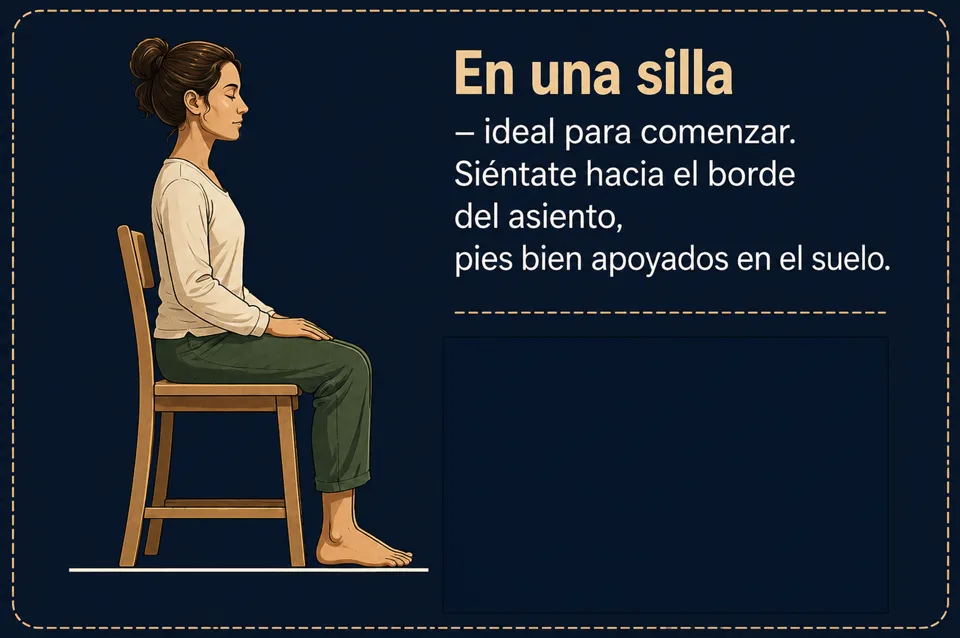
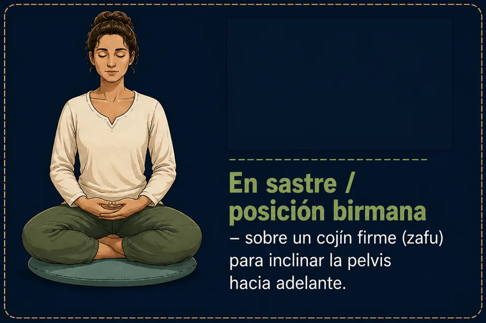
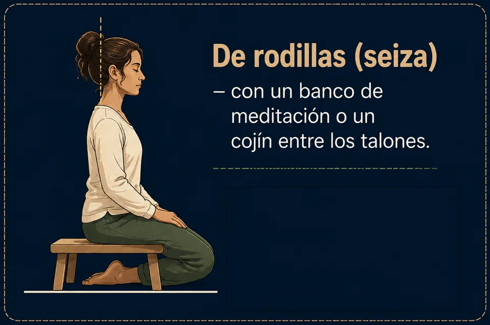

La postura de meditación: 4 posiciones válidas
Silla, piernas cruzadas, seiza o tumbado: las 4 posiciones de meditación con esquemas, y los 7 puntos de una postura digna y relajada.
La postura de meditación no exige flexibilidad ni la flor de loto: en una silla, con las piernas cruzadas, de rodillas o tumbado, todo cabe en siete puntos sencillos. Así puedes sentarte cómodo y meditar sin dolor desde tu primera sesión guiada.
La postura
El principio: «digno y relajado»
Una buena postura de meditación cabe en una fórmula: la espalda se yergue, el resto se suelta. Demasiado hundido, la mente se duerme; demasiado rígido, el cuerpo se crispa. Imagina un hilo que tira suavemente de la coronilla hacia el cielo, mientras tus hombros, tu vientre y tu mandíbula se funden hacia el suelo.

Elegir la posición: 4 opciones, ninguna jerarquía
La mejor posición es la que puedes mantener de 10 a 20 minutos sin dolor. Para un principiante, la silla es un excelente punto de partida.




Preguntas frecuentes
¿Hay que meditar en la posición del loto?
No. El loto no es obligatorio: una silla da exactamente la misma calidad de meditación. El único criterio es mantener la posición sin dolor durante toda la sesión, con la espalda erguida y el cuerpo suelto.
¿Se puede meditar tumbado?
Sí — sobre todo para el escaneo corporal, la relajación profunda y la meditación para dormir. El riesgo es dormirse: si no es el objetivo, mantén un antebrazo levantado o elige una posición sentada.
¿Qué hago si me duele la espalda al meditar?
Empieza en una silla, con los pies planos, sentado hacia el borde delantero para que la columna se sostenga sola. Si aparece un dolor agudo, cambia de posición sin dudar: una buena postura de meditación sigue siendo cómoda.
¿Prefieres practicar antes que leer?
Todo lo que describe este artículo se practica en Awakening Minds, una app de meditación gratis: 195 meditaciones guiadas en español — dormir, respiración guiada, mundos inmersivos — sin suscripción, sin anuncios, sin cuenta y sin conexión.
✦ Descubre la app gratis